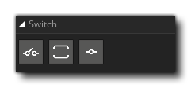

La bibliothèque d'actions Switches contient les actions requises pour créer des instructions switch dans votre code d'action de jeu. Dans un certain nombre de situations, vous voulez laisser vos instances terminer une action en fonction d'une valeur particulière, et alors que vous pouvez le faire en utilisant plusieurs instructions "if" consécutives, cela peut devenir désordonné lorsque les choix possibles sont supérieurs à deux ou trois. Dans ces cas, il est préférable d'utiliser l'action "switch". Une action de commutation fonctionne comme suit:
- Vous fournissez une valeur a (généralement à partir d'un type d'expression ou d'une variable)
- La valeur est comparée à la valeur affectée aux différentes instructions "case"
- Si la valeur est la même que la valeur du cas, le contenu du cas est effectué sinon le cas suivant est évalué, etc...
- Une fois qu'un cas a été effectué ou que tous les cas ont été évalués et ont échoué, le code continuera à partir de la fin de l'interrupteur
- Si tous les cas ont échoué et que vous avez un cas par défaut, cela sera effectué avant que le code ne continue à partir de la fin du commutateur
La bibliothèque Switches a les actions suivantes:
 | Commutateur |
 | Cas |
| Défaut |